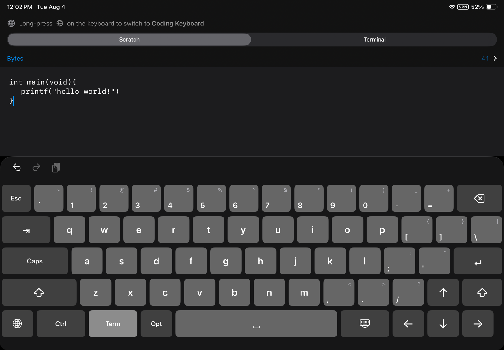
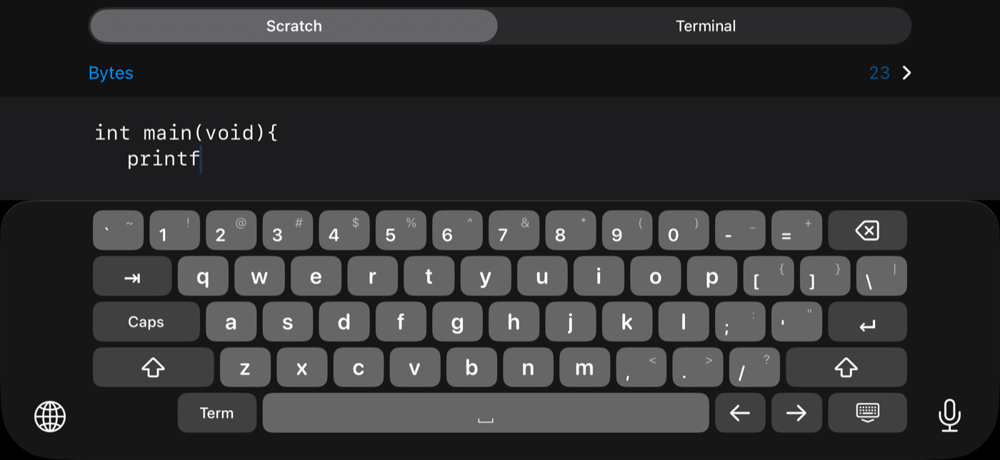
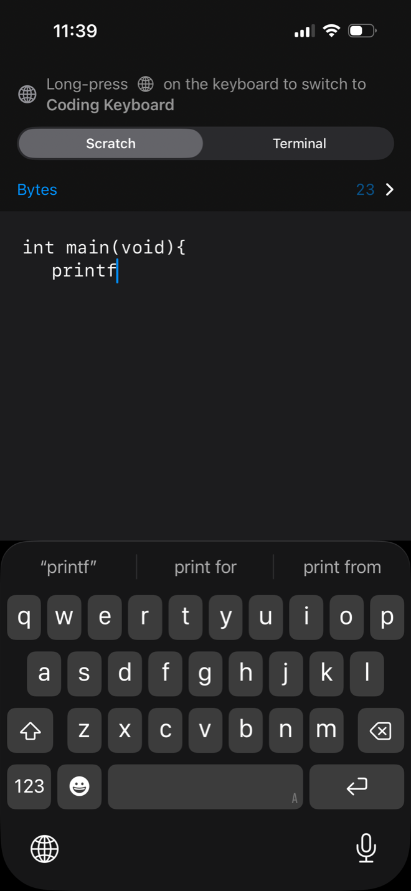
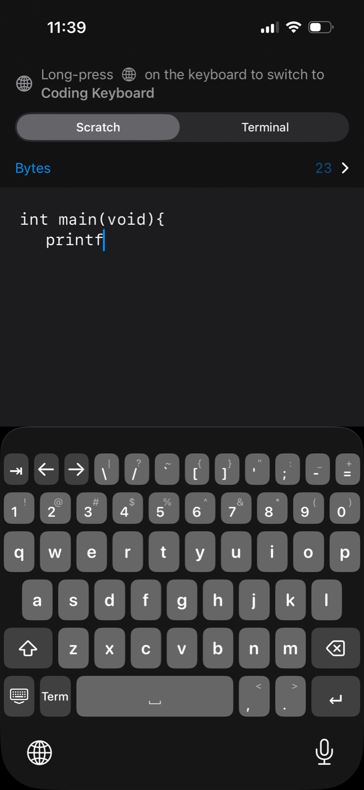
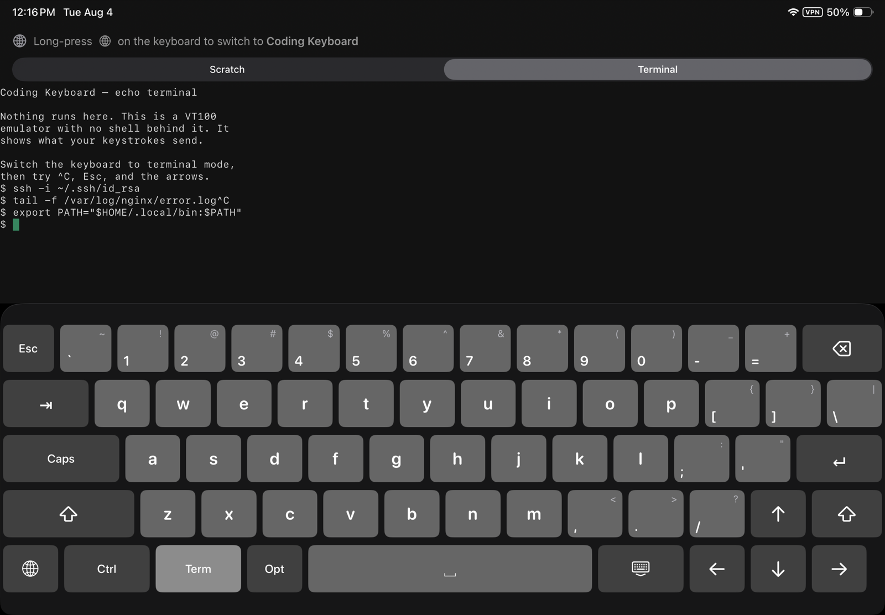
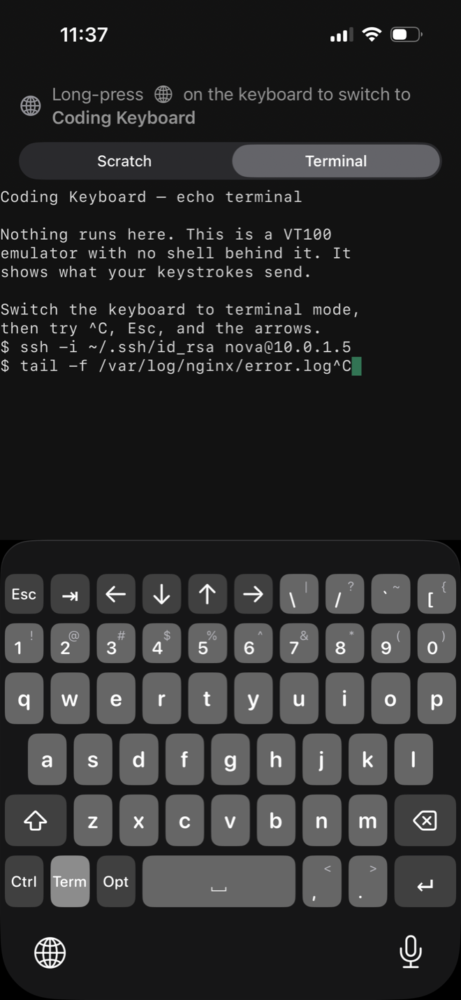

An iOS keyboard laid out the way a desktop keyboard is laid out. In landscape and on iPad, the top four rows are identical to a full-size keyboard, key for key — so you already know where everything is.
Backtick left of the 1. Brackets right of the P. Backslash above return. A caps lock where caps lock goes, and shift on both sides. Four rows that match a full-size keyboard key for key, so nothing has to be learned and nothing has to be hunted for.


The stock iPhone keyboard hides the braces, square brackets, backslash, pipe, backtick and tilde behind two levels of page switching, and has no Tab key at all. iPad fares better, but only on the largest screens — on an 11-inch iPad the system keyboard has no number row, no brackets, no backslash and no arrow keys either.
That is fine for prose and miserable for code, SSH sessions and config files. This one puts them all on the first layer, and prints every shifted value on the key that produces it.


A terminal does not receive key events — the PTY sees a byte stream. So terminal mode sends the bytes a real keyboard would have produced, and a shell cannot tell the difference.
| Key | Normal | Terminal |
|---|---|---|
| Return | newline | \r — CR, 0x0D |
| ⌃ + letter | — | the C0 byte: ⌃C = 0x03, ⌃D = 0x04, ⌃R = 0x12 |
| ⌥ + key | — | ESC then the key — Meta is an ESC prefix |
| ← → | move the caret | ESC [ D · ESC [ C |
| ↑ ↓ | — | ESC [ A · ESC [ B |
| Home / End | — | ESC [ H · ESC [ F |
| esc | — | 0x1B |
Turning it on adds esc, ctrl and opt and a full set of cursor keys — and moves no letter to make room for them. ctrl and opt latch the way Shift does: tap, hold, or double-tap to lock, and they stack with it and with each other.
It works wherever the host app forwards inserted text to its terminal. The app ships an echo terminal — a real VT100 emulator with no shell behind it — so you can see exactly what each key sends before relying on it anywhere else.


The keyboard does not request Full Access. Without it, iOS grants a keyboard extension no network capability at all — it cannot send your keystrokes anywhere because it cannot send anything anywhere. That is enforced by the operating system, not promised in a policy.
No data is collected. The keyboard extension has no analytics, no crash reporting and no third-party SDKs. The source is on GitHub under the MIT license, so none of the above has to be taken on faith.
No autocorrect, predictive text or swipe typing. No emoji key — the globe key switches back to your usual keyboard. No haptic feedback, because iOS only permits it with Full Access, which this keyboard does not request. US ASCII layout only.